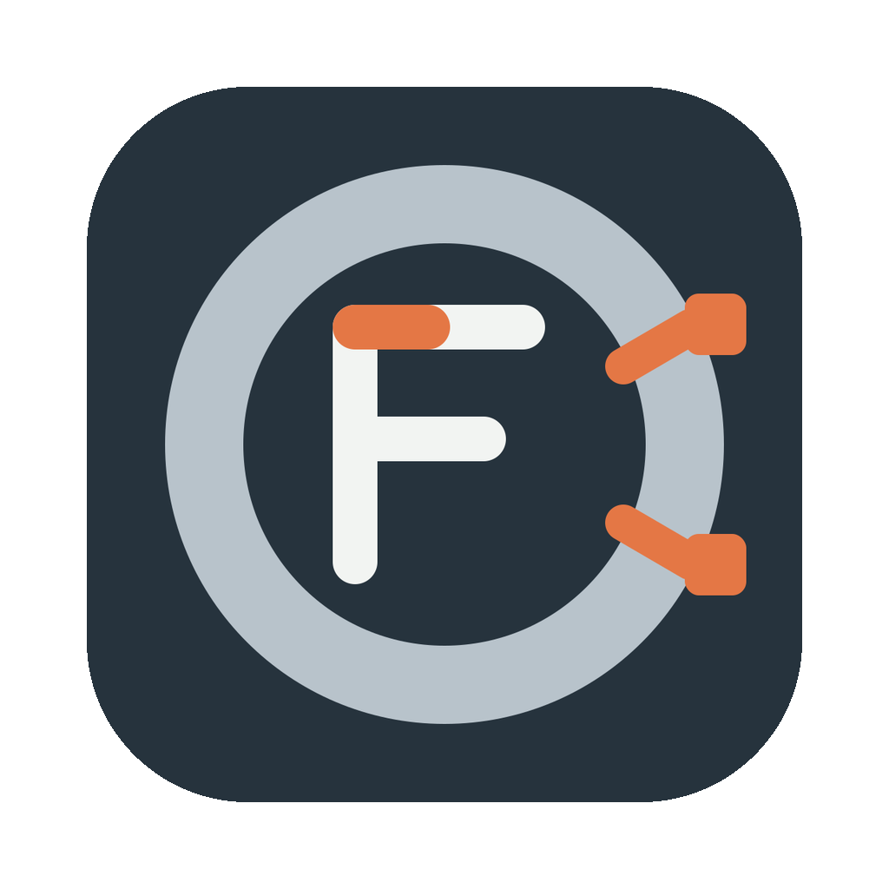

FerriteMCU
A native Rust IDE for microcontroller development.
ESP32 projects can be generated, built, flashed, debug-started, and monitored from the project editor using the upstream Rust libraries. Raspberry Pi Pico support is planned for a later release.
The current application includes a code editor, project browser, terminal, and Git tools. Source-level debugger breakpoints and stepping are not yet available.